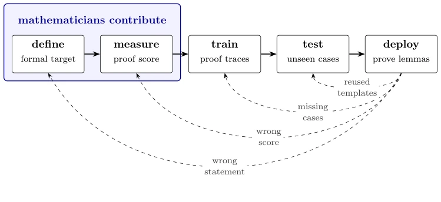

这篇论文与其说是技术突破，不如说是一份写给数学家的“招兵买马”檄文。作者 Levine 试图用数学语言解构 AI 安全，提出“可解释性、可控性、合作性”三大属性。亮点在于将抽象的数学分支（逻辑、概率、代数）与具体的安全痛点挂钩，比如用 Löb 定理解释程序博弈中的合作。但缺点也很明显：这是一篇综述性邀请，缺乏实证数据，更像哲学思辨而非工程指南。对于急需落地方案的具身智能社区，它可能显得过于“高大上”且遥远。不过，它指出的“数学定义缺失”确实是当前黑盒模型时代的硬伤，呼吁数学家介入是必要的。
This paper is less a technical breakthrough and more a "call to arms" manifesto addressed to mathematicians. Author Levine attempts to deconstruct AI safety using mathematical language, proposing three major attributes: "interpretability, controllability, and cooperativity." The highlight lies in linking abstract mathematical branches (logic, probability, algebra) to specific safety pain points, such as using Löb's theorem to explain cooperation in program games. However, the drawbacks are also obvious: this is a review-style invitation, lacking empirical data, resembling philosophical speculation more than an engineering guide. For the embodied AI community urgently seeking implementation solutions, it may appear too "high-end" and distant. However, the "lack of mathematical definitions" pointed out is indeed a critical flaw of the current black-box model era, and calling for mathematicians to intervene is necessary.
研究动机Motivation
核心动机是防止 AI 超越人类理解与控制，导致人类被边缘化。现有 AI 系统往往“不可解释”（illegible），工程师无法理解其内部思维过程，只能依赖 Chain of Thought 监控。更危险的是，当机构由 AI 代理主导时，目标可能漂移。作者指出，当前安全实践过度依赖事后监控，缺乏事前数学定义。例如，内容推荐器若未定义“受益”，仅优化停留时间会导致有害内容。此外，现有博弈论模型假设玩家不透明，而开源代码博弈揭示了程序间完全透明时的合作可能 [7]，但缺乏量化界限。需要数学工具来定义目标与信念，而非仅靠直觉。
The core motivation is to prevent AI from surpassing human understanding and control, resulting in human marginalization. Existing AI systems are often "illegible" (illegible), engineers cannot understand their internal thought processes, and can only rely on Chain of Thought monitoring. More dangerously, when institutions are dominated by AI agents, goals may drift. The author points out that current safety practices overly rely on post-hoc monitoring and lack pre-hoc mathematical definitions. For example, if a content recommender does not define "benefit," optimizing only dwell time will lead to harmful content. Furthermore, existing game theory models assume opaque players, while open-source code games reveal the possibility of cooperation when programs are fully transparent [7], but lack quantitative bounds. Mathematical tools are needed to define goals and beliefs, rather than relying solely on intuition.

Figure 2. A schematic pipeline for producing an AI system, illus- trated by a tool for proving inequalities. The solid arrows follow the five stages; each dashed arrow points to an earlier stage that a failure in use prompts us to revisit.
The paper does not propose a single algorithm, but constructs a five-stage AI system production Pipeline: Define (define goals), Measure (measure metrics), Train (training), Test (testing), Deploy (deployment), with failure feedback correction Figure 2. The author organizes content by mathematical fields: 1. Logic and Game Theory: Using Löb's theorem to prove FairBot can achieve non-exploitative cooperation in program games [7], and explores the threshold problem of the bounded version FairBotk [15]. 2. Probability and Causality: Contrasting two agent perspectives of "utility maximizer" and "active predictor," proposing a method to infer World Model (World Model) from behavior through intervention experiments. 3. Algebra: Discussing the Superposition (Superposition) phenomenon in neural networks, i.e., how features are stored in non-orthogonal directions. The overall framework emphasizes formalizing "interpretability, controllability, cooperativity" using mathematical formalization, rather than relying on engineering trial-and-error.
This paper belongs to the nature of theoretical review and invitation, with no empirical experiments in the traditional sense. The paper demonstrates possibilities through mathematical theorems, such as the cooperation proof of FairBot under Peano arithmetic [7]. The author lists multiple Open Problems (Open Problems), such as MAIS-O1 (quantification overhead of bounded Löb theorem) and MAIS-O2 (recovering world models from behavior). These "problems" serve as guidance for research directions. The "experiments" mentioned in the text are mostly thought experiments or restatements of published work, such as citing Critch's bounded version analysis [15]. For embodied AI, this means there is currently a lack of a mathematical safety framework for physical interaction, which needs to be filled by future work.